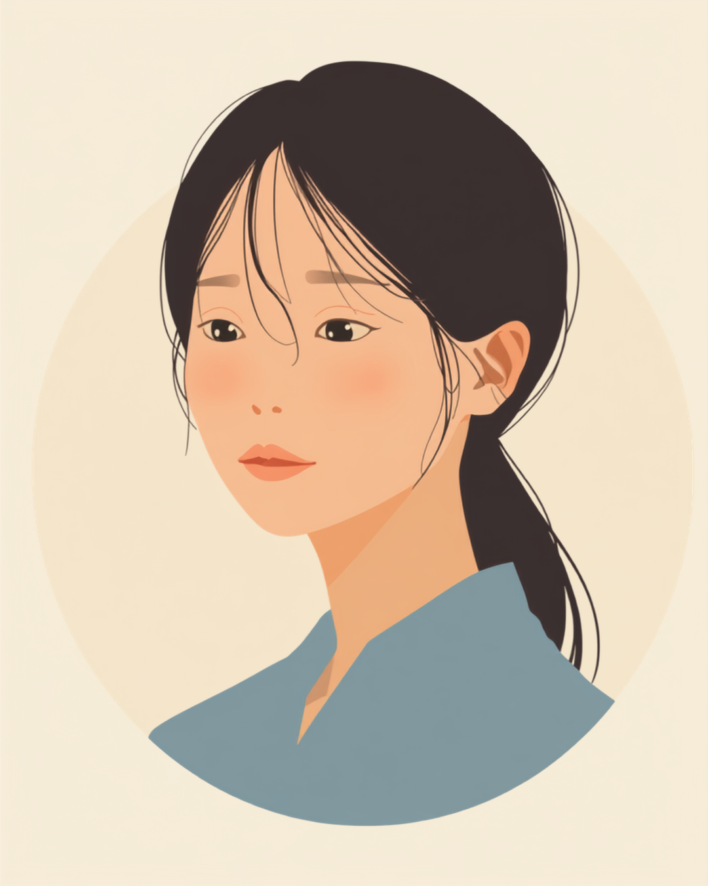

うつ病になると、仕事の大きな決断だけでなく、今日のランチや明日の服装のような些細な選択にまで時間がかかるようになることがあります。周りからは「なんでそんなことで悩むの」と不思議がられ、本人は本人で「こんな簡単なことも決められない自分はダメだ」と責めてしまう。この記事では、うつ病にともなう判断力の低下と職場での付き合い方、使える相談先を当事者の声をもとに整理しました（2026年7月時点の情報です）。
PR


「そんなことも決められないの?」の裏にある判断力の低下

うつ病では気分の落ち込みだけでなく、考えをまとめる力や決断する力そのものが弱くなることがあると言われています。「性格が優柔不断になった」のではなく、脳のエネルギーが不足している状態に近いのかもしれません。ミミ
就労支援の現場で関わってきた中で、うつ病のある方から何度も聞いてきた悩みがあります。「今日のお昼、何を食べるか決めるだけで、頭がぐるぐるしてしまう」というものです。それまでは何も考えずに選べていたはずのことが、急に大きな決断のように感じられてしまう。傍から見れば些細なことでも、本人にとっては本当に苦しい時間になっていることがあります。
厄介なのは、これが仕事の重要な判断だけでなく、服を選ぶ、メールの返信文を決める、会議で意見を求められる、といったあらゆる場面に広がっていくことです。周囲は「そんなことで?」と軽く受け止めがちですが、本人にとっては一つひとつの選択がすべて重く感じられている状態なのかもしれません。
!
判断力の低下の感じ方や程度には個人差があります。この記事で挙げる内容がそのまま当てはまるとは限らないため、気になる症状がある場合は自己判断せず医師に相談することをお勧めします。
「正直言うと、ランチのメニューが決められなくて、結局いつも同じコンビニで同じおにぎりを買うようになりました。それだけならまだいいんですけど、仕事でも資料の色をどうするかとか、メールの一文をどう書くかとか、本当にどうでもいいところで固まってしまって。半年くらい続いたころ、上司に『判断が遅い』って言われて、なんとか説明しようとしたんですけど、結局『すみません、気をつけます』としか言えませんでした。」
20代・女性（うつ病・IT企業事務職）
相談の一コマ

相談者
最近、本当に些細なことも決められなくて。ランチのメニューひとつ選ぶのに何分も固まってしまって、こんな自分が情けなくて。

ミミ
それは性格の問題というより、うつ病にともなう判断力の低下として説明されることがある状態なんです。ご自分を責めなくて大丈夫ですよ。
相談者
そうなんですね…ずっと「怠けてるだけかも」と思っていました。
ミミ
怠けとは違うと思います。判断に使えるエネルギーが今は少なくなっているだけなので、次の章で「決める回数」自体を減らす工夫を一緒に見ていきましょう。
なぜ、小さな決断ほど動けなくなるのか
この状態は、「ブレインフォグ」と呼ばれる頭に霧がかかったような感覚と関係していると説明されることがあります。集中しづらい、考えがまとまらない、言葉がすぐに出てこない。こうした認知面の変化が、日常のあらゆる選択の場面で判断のスピードを落としてしまうのかもしれません。
i
うつ病による認知機能の変化は「ブレインフォグ」と呼ばれることがあり、思考力・集中力・判断力の低下として現れる場合があるとされています。程度や現れ方には個人差があるため、詳しくは主治医にご確認ください。
さらに厄介なのは、脳のエネルギーには限りがあるという点です。健康な状態であれば、重要な判断に多くのエネルギーを使い、些細な選択はほとんど無意識に済ませることができます。ところがうつ状態にあるときは、些細な選択にまで多くのエネルギーを使ってしまい、本当に必要な場面で判断力が残っていない、ということが起こりやすくなります。
些細な判断にエネルギーを使い切ってしまい、肝心なときに余力が残っていない
「怠けている」「優柔不断になった」と自分を責めてしまう方は多いのですが、これは性格の問題というより、使えるエネルギーの総量が減っている状態だと捉えたほうが、必要以上に自分を追い詰めずに済むかもしれません。
「めちゃくちゃ情けない話なんですけど、会議で『どちらの案がいいと思う?』って聞かれたときに、3ヶ月くらい前から急に何も言えなくなったんです。以前ならその場でパッと意見を言えてたのに、頭の中が真っ白になって、結局『どちらでもいいと思います』って言ってしまう。そのあと自己嫌悪で、その日は仕事にならないくらい落ち込みました。」
40代・男性（うつ病・営業職）
「双極性障害の抑うつ期に入ると、決断力がゼロになるんですよね。躁のときはむしろ即決しすぎて後悔するタイプなので、自分でもこの落差に戸惑います。抑うつ期は、上司にメールを送る『送信』ボタンひとつ押すのに1時間くらい迷ったこともありました。今は『抑うつ期の自分は判断を急がない』と決めておくことで、少しだけ楽になった気がします。」
30代・女性（双極性障害・抑うつエピソード期／人事職）
職場でできる工夫、「決める」を減らす・仕組み化する
判断力そのものを一気に回復させるのは難しくても、「決める回数」自体を減らす工夫はできることがあります。すべての選択に全力を注ぐのではなく、あらかじめ仕組みで決着をつけておく場面を増やす、という考え方です。
「決める」を減らすための工夫
- 重要な判断は、比較的頭が働きやすい午前中に集中させる
- 服装やお昼ご飯など繰り返す選択は、あらかじめ数パターンだけ決めておく
- 選択肢が多すぎるときは、周囲に「AとBならどちらがいいと思いますか」と2択まで絞ってもらう
- 優先順位の低い決定は、思い切って他の人に委ねる練習をしてみる
「即決できないこと」を弱点として隠すのではなく、「一度持ち帰って考える時間がほしい」と先に伝えておくだけでも、急かされる場面はぐっと減るという声をよく聞きます。ミミ
職場に伝える際も、「うつ病で判断力が落ちています」とすべてを説明する必要はありません。「今日中に返事します」「一度持ち帰らせてください」といった、業務上使いやすい言い回しに変換して伝えるだけでも、周囲の受け止め方は変わることがあるようです。
!
退職や転職、大きな契約の変更といった人生に関わる大きな決断は、判断力が落ちている時期には先送りにしたほうがよいとされることがあります。可能であれば、体調が落ち着いてから、信頼できる人にも相談したうえで判断することをお勧めします。
使える制度と、一人で抱えないための相談先
医療機関という選択肢
判断力の低下が続き、仕事や生活に大きな支障が出ている場合は、すでに通院している方は主治医に症状の変化として伝えることをお勧めします。まだ受診していない場合は、心療内科や精神科が相談先の一つになります。治療や休養によって、判断力を含めた認知面の状態が少しずつ改善していく場合があるとされています（2026年7月時点の情報です）。
相談できる窓口
- 主治医・精神科、心療内科（症状の変化として判断力の低下を伝える）
- 職場に選任されている産業医（50人以上の事業場に選任義務あり）
- 職場の信頼できる上司・人事担当者（業務量や判断を求める場面の調整）
- 就労移行支援事業所（働き方の整理や職場との調整の相談）
うつ病にともなう判断力の低下の程度や現れ方には個人差があります。この記事の内容がそのまま当てはまるとは限らないため、実際の判断は主治医・支援者とよく相談しながら進めることをお勧めします（2026年7月時点の情報です）。
決められないのは、怠けているからでも、性格が弱いからでもありません。今は判断に使えるエネルギーが少なくなっているだけだと捉えて、決める回数を減らす工夫から始めてみませんか。
よくある質問
Q. うつ病になると本当に小さなことも決められなくなりますか？
うつ病では意欲や思考力の低下にともなって、日常の些細な選択にも時間がかかるようになることがあるとされています。ランチのメニューや服装のような、普段なら迷わず選べていたことが急に大きな壁のように感じられる、という声は珍しくありません。ただし現れ方には個人差があるため、気になる場合は自己判断せず医療機関にご相談ください。
Q. 「優柔不断」と「うつ病の判断力低下」はどう違いますか？
性格的な優柔不断と、うつ病にともなう判断力の低下は見分けがつきにくい場合があります。目安の一つとして、以前はスムーズに決められていたことまで急に決められなくなった、決めたあとも強い自己嫌悪が続く、といった変化がある場合は、性格の問題というより体調の変化として捉えたほうがよいとされることがあります。診断は医師にしかできないため、心配なときは専門家にご相談ください。
Q. 職場で「早く決めて」と急かされるのがつらいときはどうすればいいですか？
すべての場面で即決を求められると負担が大きくなることがあります。「今日中に返事します」など一度持ち帰る時間をもらう、選択肢をあらかじめ2つ程度に絞ってもらうよう頼む、といった工夫が助けになる場合があります。信頼できる上司に、判断に時間がかかりやすい時期であることを事前に伝えておく方法も一つの選択肢です。
Q. 判断疲れを減らす工夫にはどんなものがありますか？
重要な判断はなるべく午前中など体調がよい時間帯に集中させる、服装や昼食のような繰り返しの選択はあらかじめパターンを決めておく、といった工夫が有効な場合があります。すべての判断を完璧にこなそうとせず、優先順位の低い決定は他の人に委ねる練習をすることも助けになるとされています。
Q. 決断できない状態が続くとき、何科に相談すればいいですか？
すでにうつ病の診断を受けている場合は、まず主治医に症状の変化として伝えることをお勧めします。まだ受診していない場合は、心療内科や精神科が相談先の一つになります。判断力の低下が仕事に大きく影響していると感じる場合は、早めに専門家へつなぐことが回復への近道になることがあります（2026年7月時点の情報です）。
すべてを一度に変えようとせず、今日できる一歩から始めてみる
PR


一人で抱え込む前に、今の気持ちを話してみませんか
「まだ迷っている」段階でも大丈夫です。mimemimeの無料相談は、今の状況の整理から一緒に始められます。
無料で話してみる
おのざる
mimemime代表。就労支援の現場経験をもとに、障がいのある方の働く不安に寄り添う記事を執筆。